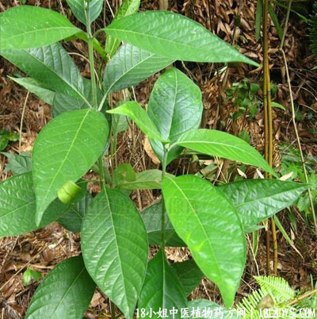

(本文解释权归中药材天地网兄弟站-18小姐中医植物药方网所有,如需转载请注明出处)

别名：鬼灯笼、岗灯笼、苦灯笼、鬼点火、坟头青。
植物名：鬼灯笼。
生长环境：本品为小灌木。多野生于丘陵上或旷野间，广州近郊各处可见。
分布：广东各地均有，中国南部亦有分布。
入药部分：根。
采集期：不拘时。
自采地点：山岗。
性味：性凉，味微苦。
功能：清热，止痛。
主治、用量和用法：1、癍痧发热，配伍用；2、苦伤咳：干根1至2两，清水煎服，或加猪瘦肉同煎服、；3、咽痛：干根1至～2两，清水煎服；4、胃痛：干根1两5钱，青壳鸭蛋1只，清水三碗半，煎至蛋熟去壳，再煎成一碗服，连蛋食；5、伤寒夹色，配伍用；6、夹板疠：干根2至3两，加鸡肉2至4两，清水煎服；7、疝气：配伍用。
验方1：（治疝气方）苦灯笼根1两、痕芋头花仁3钱、猪小肚（膀胱）1个，清水五碗，煎成1碗服。
（方解）本方苦灯笼根平肝清膀胱热；痕芋头花仁化气止痛；用猪小肚取其与膀胱同类相从，以补不足。构成补证化气、泻有余之剂。
（方歌）膀胱湿热疝成因，清肝解热灯笼根，痕芋花仁猪小肚，通阳利尿法堪珍。
验方2：（治伤寒夹色方）苦灯笼根5钱、干苦地胆5钱、鸭脚树皮5钱、丁癸草3钱、鬼羽箭5钱、山芝麻3钱，清水三碗，煎成一碗服。
（方解）苦灯笼根、苦地胆、山芝麻清热，鸭脚树皮、丁癸草、鬼羽箭解表，合为辛苦寒凉之剂，以清里热为主、解毒为辅，治寒邪清里化热有效。
（方歌）夹色因由病入房，白花灯笼地胆当，鸭脚树皮芝麻合，丁癸羽箭组成方。
验方3：（治痰火疠方）灯笼根1两、水老鼠簕根5钱、簕茨菇5钱、猪瘦肉适量、清水三碗半，煎成一碗服。
（方解）痰火疠多由痰火肝郁而成，发于足处。方中灯笼根、簕茨菇清肝化气解郁；老鼠簕除痰散结，用治痰火疠有效。
（方歌）肝阳郁结疠连生，鼠簕灯笼两用根，加入簕茨菇煎服，郁鲜痰除效堪珍。
(本文解释权归中药材天地网兄弟站-18小姐中医植物药方网所有,如需转载请注明出处)